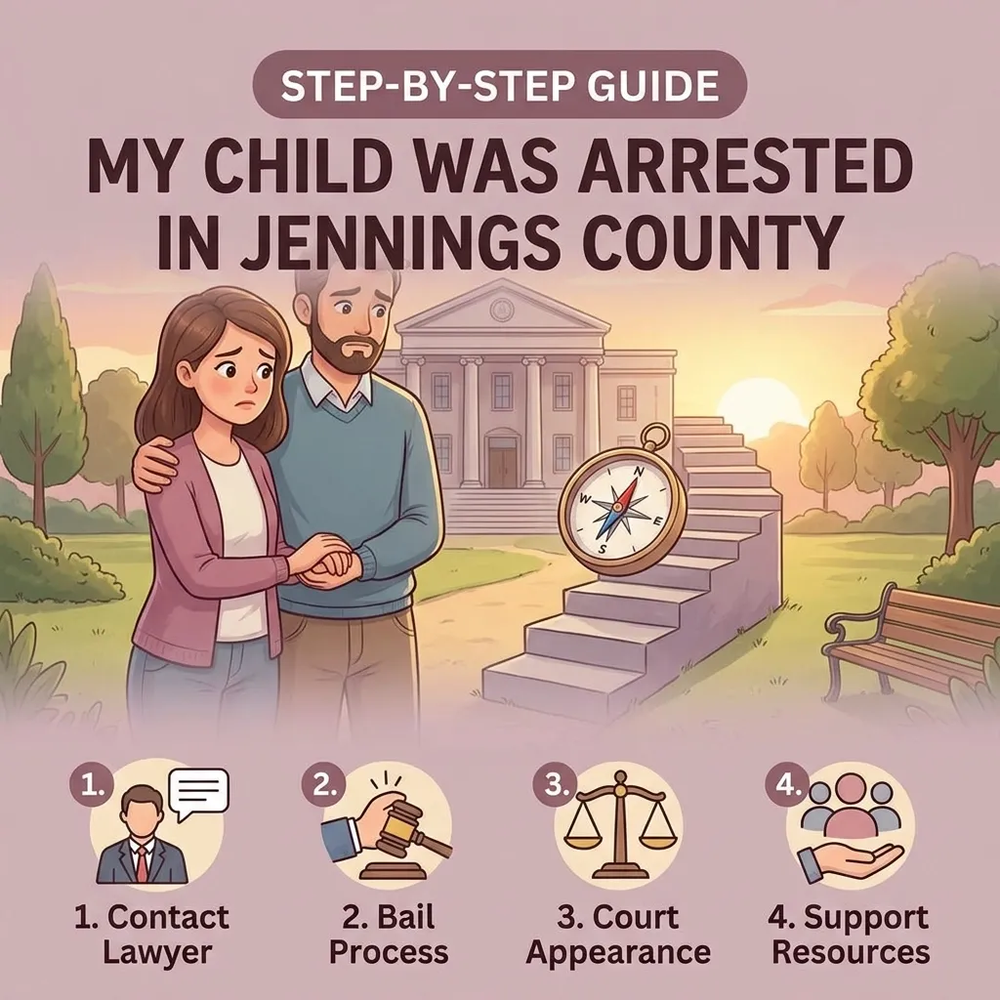
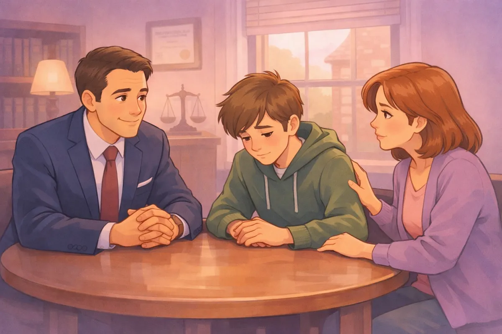

My Child Was Arrested in Jennings County: A Step-by-Step Guide for Stressed Parents

If you are reading this, you are probably going through one of the scariest moments a parent can face. Your phone rang, or there was a knock at the door, and now your child is in police custody. Whether it happened in North Vernon, Scipio, or out near Commiskey, the feeling of panic is the same.
First, take a deep breath. You aren't a "bad parent" because this happened, and your child isn't a "bad kid" because of one mistake. The legal system is complicated, but it is manageable when you take it one step at a time. As a small town lawyer who wears many hats, I've seen families in this exact spot many times. My job is to listen to what you have to say and give you practical options to help your child move past this.
Here is a step-by-step guide on what to do when your child is arrested in Jennings County.
1. Locate Your Child and Stay Calm
The very first thing you need to do is find out where your child is being held. In Jennings County, juveniles are usually processed through the Jennings County Sheriff's Office or the North Vernon Police Department. However, because we don't have a dedicated juvenile-only detention center right here in the county, your child might be transported to a regional facility in a nearby county if they aren't released to you immediately.
When you speak to the officers, stay as calm as possible. It's hard, I know. You're angry, scared, or both. But being confrontational with law enforcement usually makes the process harder for your child. Ask for the specific charges and the name of the arresting officer. This information is vital for any lawyer in Vernon, Indiana to start building a defense.
2. Understand Your Child's Rights
Just like adults, juveniles have rights. They have the right to remain silent and the right to an attorney. Many kids think they can "explain their way out" of a situation with the police. In reality, they often end up saying things that can be used against them later in court.
Instruct your child to be polite but to wait for a lawyer before answering questions about what happened. As a Jennings County attorney, I always tell parents that the sooner we get involved, the better we can protect those rights. If the police want to interview your child, you have the right to be present and the right to have a legal professional by your side.

3. The 24 to 72-Hour Window: The Detention Hearing
If your child is not released to your custody immediately after the arrest, a judge must hold a detention hearing. This usually happens within 24 to 72 hours (excluding weekends and holidays).
At this hearing, the court decides two things:
Is there probable cause to believe your child committed the act?
Should your child stay in detention or go home while the case is pending?
This is where having one of the experienced attorneys in North Vernon, Indiana is crucial. We can argue for your child to come home. We look at their school records, their behavior at home, and their ties to the community in places like Hayden or North Vernon to show the judge that your child is not a flight risk or a danger to the public.
4. Juvenile Delinquency vs. Adult Court (The 2026 Context)
It is important to understand that Indiana handles kids differently than adults, but there are exceptions. Most cases stay in "Juvenile Delinquency" proceedings. The goal here is supposed to be rehabilitation, helping the kid get back on the right track rather than just punishing them.
However, under the updated 2026 Indiana laws, the rules have become stricter for certain offenses. For example, if a minor is involved in a serious incident involving a firearm or a school-zone offense, the prosecutor might attempt "direct-filing." This means they try to move the case to adult court, where the penalties are much more severe.
Whether your child is facing a minor mistake or a more serious charge, you need to know exactly what you're up against. You can read more about how the local legal system works in my guide on Jennings County Court 101.
5. Listen to Your Child's Side of the Story
When the dust settles a little, sit down and truly listen to your child. Sometimes there is more to the story than what the police report says. Was there peer pressure? Was it a case of being in the wrong place at the wrong time? Was there a misunderstanding of the law?
At Chris Doran Law LLC, I pride myself on being an attorney who actually listens. I don't just look at a case file; I look at the person. We sit down together and explore all the practical options. Sometimes the best path is a diversion program that keeps the record clean. Other times, we need to fight the charges head-on because the facts don't support the arrest.
6. Why a Local Lawyer Matters
You might think any lawyer will do, but North Vernon is a small town. The legal community here is tight-knit. Knowing the local prosecutors, the probation officers, and how the Jennings County courts operate gives your child an advantage.
A local lawyer in Vernon, Indiana understands the local resources available for kids, like counseling services or community programs, that might satisfy a judge instead of detention. I've handled a wide variety of complex legal matters during my career, and I know that in a small community, your reputation and your family's privacy matter.
7. Focus on the Future, Not Just the Mistake
It is easy to spiral into "what ifs." You might worry about college applications, future jobs, or how the neighbors in Scipio will look at your family.
The good news is that the juvenile system is designed to allow for second chances. Many juvenile records can be expunged or sealed later on, provided the case is handled correctly from the start. One mistake at fifteen or sixteen years old does not have to define who your child becomes at twenty-five.
We focus on client outcomes. My goal is to resolve your legal needs so that your family can get back to normal life. Whether it's navigating a custody hearing or defending a juvenile charge, we take a straightforward, no-nonsense approach to problem-solving.
Practical Steps You Can Take Right Now
As you wait for your first meeting with an attorney, keep these things in mind:
Keep a Log. Write down everything you remember about the arrest and any conversations you had with the police.
Stay Off Social Media. Don't post about the arrest. Don't let your child post about it. Prosecutors can and will use social media posts as evidence.
Gather Documents. Collect recent report cards, awards, or proof of community involvement. Showing that your child is a good student or active in local groups helps build a "whole person" picture for the court.
Be Honest with Your Lawyer. I can only help if I have all the facts. I'm here to help, not to judge.
Conclusion
If your child has been arrested, the clock is already ticking. You need someone who knows the Jennings County system and who will treat your family with the respect you deserve.
I'm Chris Doran, and I've spent years helping people in North Vernon and the surrounding areas navigate their toughest legal days. I don't charge excessive "big city" fees, and I'm transparent about everything from my strategy to my fees.
You don't have to do this alone. Let's sit down, talk about what happened, and find the best way forward for your child's future.
If you need help right now, please reach out to my office. We can schedule a time to talk and start working on a plan. You can also learn more about me and my commitment to this community on my About Me page.